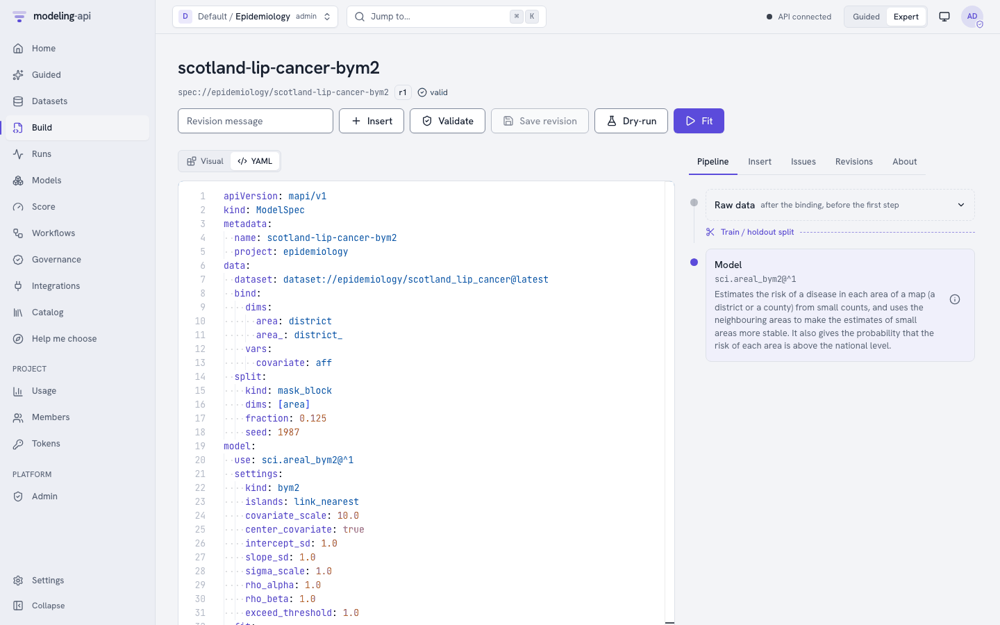
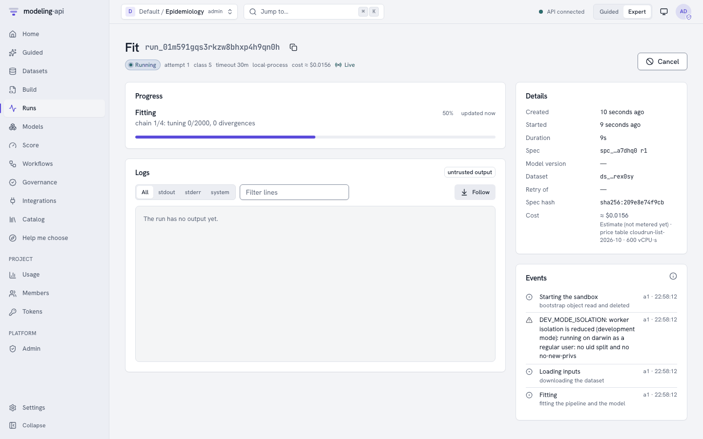

E18 Scottish lip cancer disease map (ICAR/BYM2)¶
This tutorial does the main analysis of the pymc-challenges notebook
E18_areal_models_icar_bym2.py in the web app. You use the model sci.areal_bym2@1. You do
not write PyMC code.
You need:
- The platform (start it with
make dev) and a project that you can upload datasets to. This tutorial uses the projectepidemiology. If your project has a different name, change the project part of eachdataset://andmodel://reference. - A local copy of pymc-challenges. The export command reads the file
data/scotland_lip.geojson. - About 15 minutes. One fit takes less than one minute of sandbox time.
1. The question¶
Between 1975 and 1980, 536 men in Scotland got lip cancer. For each of the 56 districts, you know the observed count and an expected count. The expected count is the count of the district if each age group had the national rate. The ratio of the two is the standardised morbidity ratio (SMR). The SMR is a raw estimate of the relative risk of the district.
The notebook asks two questions:
- Where is the risk really high, when you include the noise of small counts?
- Does outdoor work explain the risk?
AFFis the percentage of the workers in agriculture, fishing and forestry. Lip cancer has a relation to sunlight.
Small districts have few cases, so their SMRs have much noise. The notebook lets each district
share its risk with its neighbours on the map. It puts graph priors on the district effects:
the intrinsic CAR (ICAR), the proper CAR and BYM2. BYM2 is a scaled ICAR plus independent
effects. Its parameter rho is the share of the variation that follows the map.
The decision at the end of the notebook is this:
- Do not publish the raw SMR map. Publish the BYM2 smoothed relative risk and the probability that the relative risk is more than 1. In 19 districts this probability is more than 0.95. These are the districts where the risk is "high and certain".
- Use BYM2 as the default model. The graph models predict equally well, and all three
predict better than independent districts. BYM2 has a
rhothat you can read, and its priors mean the same thing on each map. - Report the AFF effect as an association. Its 90% interval excludes 0 in each model. But its size changes from a relative risk of 1.96 for each 10 points (independent districts) to 1.50 (BYM2). The size depends on what you assume about risk factors that you did not measure. This is spatial confounding.
What you will get, and the notebook section that each item replaces:
| In the web app | Notebook |
|---|---|
The graph of the districts, with the island links (Plots, net.graph) |
Section 2 (the queen graph) and section 3 (the island links) |
The posterior of b0, b1, sigma and rho (Parameters) |
Section 4, the BYM2 row of the diagnostics table, and section 6 |
The smoothed relative risk rr and p_exceed, the probability that rr is more than 1 (Plots, sci.area_map) |
Section 7, the three maps |
elpd_loo and the Pareto k warning (Diagnostics) |
Section 8, the LOO table |
| The error on 7 districts that the fit did not see (Diagnostics) | Section 8, a smaller version of the 8-fold cross-validation |
The ladder of kind values, compared by elpd_loo (the recipe sci_spatial_ladder) |
Section 4 (the five models) and section 9 (b1 in each model) |
| New maps of risk and counts (Score, Simulate) | Section 3, the prior predictive draws "by hand" |
Some parts of the notebook are not in the port, for example the unscaled BYM and the Moran's I checks of the residual effects. See Differences from the notebook.
2. Get the data¶
The export command reads the GeoJSON file of pymc-challenges and writes a NetCDF file that the platform can read. Run it from the root of the modeling-api repository:
uv run python -m mapi_plugin_science.export e18 \
--challenges <path to pymc-challenges>/data \
--out scotland_lip.nc --spec scotland_lip.yaml
The command writes:
wrote scotland_lip.nc (variables cases, expected, aff, adjacency, ring_x, ring_y on district=56, district_=56, vertex=51)
upload it as dataset epidemiology/scotland_lip_cancer and fit sci.areal_bym2
wrote the suggested spec to scotland_lip.yaml
The file holds one dataset:
| Name | Dims | Type | Meaning |
|---|---|---|---|
district |
56 | categorical, fixed |
The district names, as in the GeoJSON file (Orkney has the name Okney) |
district_ |
56 | categorical, fixed |
The same districts again: the second axis of adjacency |
vertex |
51 | integer, fixed |
The points of the outline of each district |
cases |
district |
float64, target | The observed cases, 1975 to 1980 (CANCER) |
expected |
district |
float64, exposure | The expected cases (CEXP), from 1.07 to 88.66 |
aff |
district |
float64, covariate | The percentage of workers in agriculture, fishing and forestry (AFF) |
adjacency |
district, district_ |
int64, constant | 1 when two districts touch (queen contiguity), else 0 |
ring_x, ring_y |
district, vertex |
float64, constant | The outline of each district in British National Grid metres. NaN fills the unused points |
The export makes the graph as the notebook does. Two districts are neighbours when their outlines share at least one point. The graph has 117 edges. Orkney, Shetland and the Western Isles have no neighbours. The model links them when it fits (step 6.1).
The attribute mapi_schema gives each variable its role, so you do not map columns.
Simulated data
--synthetic writes a map of 43 square districts (one of them is an island) with counts
from the model itself. The true values are b0 = 0.1, b1 = 0.4, sigma = 0.5 and
rho = 0.8. You do not need pymc-challenges for it.
3. Upload the dataset¶
- Open Datasets in the sidebar.
- Click New dataset.
- Type
scotland_lip_cancerin Name. Type a description, for example "Male lip cancer in 56 districts of Scotland, 1975 to 1980, with district outlines". - Click Create dataset. The upload panel opens.
- Click Choose files and select
scotland_lip.nc. - Click Preview structure. The panel shows Structure of the file. Make sure that it
shows
cases,expectedandaffondistrict, andadjacencyondistrictanddistrict_. - Optional: type a message in Version message (optional).
- Click Upload and ingest.
The ingest run reads the file in the sandbox. When it is done, the version page shows the tabs
Schema, Coordinates, Missingness, Preview and About. On Schema, cases has the role
target, expected has the role exposure and aff has the role covariate.
Missingness shows missing values only in ring_x and ring_y. These are the unused
points of the shorter outlines.
The file is one plain dataset. You do not need the tree fields ("Put this file in a node of a tree (optional)") or the HDF5 path.
3.1 Explore the data¶
Look at the data before you build the spec.
- On the version page, click Explore this version. The Data Explorer opens. The sections under Pictures of the data come first.
-
Click Map.
-
The map shows the 56 districts. Select
cases,expected,affor the ratiocases/expected(the standardised morbidity ratio) to set the colours. The lines join the neighbour districts. - The list of areas with no neighbour shows the labels of the data:
Okney(Orkney),ShetlandandWesternIsles(the Western Isles). The model links them when it fits (step 6.1). - The table of Moran's I tells if neighbour districts have similar values. A positive value with a small p-value is a reason for a spatial model.
ring_x,ring_yandadjacencyare geometry. They are not in Distributions, Unusual values or Data quality.- The time sections are in Not for this data. The data has no time dim.
Refer to Scientific data.
4. Build the spec¶
- Open Build and click New spec. The editor opens with the geo MMM template.
- Set the Editor view to YAML.
- Open the Insert panel on the right.
- Open the Datasets section and select
scotland_lip_cancer. The toast "Dataset set" shows. - Type
arealin the search field. Under Models, select Disease risk on a map of areas (sci.areal_bym2@^1). The toast "Model set" shows. - Select all the text in the editor and paste the full spec below. The template has other blocks (a pipeline, a split and the MMM plots), so the spec must replace all of it.
- Click Validate. The status shows
valid. - Click Save spec. The spec gets its name
scotland-lip-cancer-bym2frommetadata.name.

This is the full spec:
apiVersion: mapi/v1
kind: ModelSpec
metadata:
name: scotland-lip-cancer-bym2
project: epidemiology
data:
dataset: dataset://epidemiology/scotland_lip_cancer@latest
bind:
dims:
area: district
area_: district_
vars:
covariate: aff
split:
kind: mask_block
dims: [area]
fraction: 0.125
seed: 1987
model:
use: sci.areal_bym2@^1
settings:
kind: bym2
islands: link_nearest
covariate_scale: 10.0
center_covariate: true
intercept_sd: 1.0
slope_sd: 1.0
sigma_scale: 1.0
rho_alpha: 1.0
rho_beta: 1.0
exceed_threshold: 1.0
fit:
mode: evaluate_then_refit
seed: 1987
tune: 1000
draws: 1000
chains: 4
target_accept: 0.9
engine: nutpie
evaluate:
metrics: [rmse, mae, coverage_90, elpd_loo]
outputs:
plots:
- core.convergence
- core.posterior_forest
- sci.area_map
- net.graph
The settings are the defaults of the model. They are also the choices of the notebook. The
--spec file of the export has the short form of the same spec. This table tells what each
setting means for the question:
| Setting | Value | Meaning for this question |
|---|---|---|
kind |
bym2 |
The prior of the district effects. bym2 is the model that the notebook recommends. Use poisson, iid, icar or car to fit the other models of the notebook (step 6.5) |
islands |
link_nearest |
Orkney, Shetland and the Western Isles have no neighbours. The model links each one to the district with the closest outline, as the notebook does. Without a link, the BYM2 scaling factor is not defined |
covariate_scale |
10 | b1 is the effect of 10 percentage points of AFF on the log relative risk, as in the notebook |
center_covariate |
true | The model subtracts the mean AFF (8.66%). Thus b0 is the log relative risk of a district with a mean AFF |
intercept_sd, slope_sd |
1, 1 | The priors b0 ~ Normal(0, 1) and b1 ~ Normal(0, 1) of the notebook |
sigma_scale |
1 | The prior sigma ~ HalfNormal(1) of the total sd of the district effects |
rho_alpha, rho_beta |
1, 1 | The prior rho ~ Beta(1, 1): all shares are equally probable before the data |
exceed_threshold |
1 | p_exceed is the probability that rr is more than 1, that is, more than the national rate |
bindgives the dataset names to the names of the model. The model calls the districtsareaand the covariatecovariate. The outputs come back with your names.splitholds out 12.5% of the districts (7 districts). The model keeps these districts in the graph, but it does not use their counts. It predicts them from their neighbours. This is the question "what is the risk in a district without data?" of notebook section 8.fit.mode: evaluate_then_refitfirst fits without the held-out districts and calculates the metrics on them. Then it fits again on all 56 districts. The parameters and the maps come from the second fit.engine: nutpieis the sampler of the notebook.engine: pymcgives the same result, but it is slower.- The model always keeps the log-likelihood of each district, so you do not need a
keepblock forelpd_loo.
The plots
The model declares core.convergence, core.posterior_forest, sci.area_map,
net.graph and core.ridge. The fit makes only the plots in outputs.plots.
core.ridge needs the setting dim, and a spec cannot give settings to a plot. Without
dim, the fit skips the plot with the issue SCHEMA_INVALID. Thus the spec does not name
core.ridge.
5. Fit and watch the run¶
- Click Fit. The app opens the run page.
- The badge shows Live while the run sends events.
- The Progress card shows the progress of the sampler. The run fits two times: first without the 7 held-out districts, then on all 56 districts. The Events card shows the stages of the run and, at the end, the diagnostics. The Logs card stays empty when the model writes no output.
- When the run is done, the Result card shows Inspect model://epidemiology/scotland-lip-cancer-bym2@v1. Click it.

The two fits took 21 s in our test. Each fit samples b0, b1, sigma, rho and two
effects for each district (phi for the ICAR part and theta for the independent part).
You can also find the run under Runs. Filter it with the kind fit.
6. Read the result¶
On the model version page, the tabs are Overview, Diagnostics, Plots, Data tree, Preprocessing and Provenance. Click Explore to open the Model Explorer.
The outputs of this model are on the districts, not on a grid. Thus the Fields section is under "Does not apply". Fit vs actual and Residuals also show there, because they need a time dimension. The maps are in the Plots tab of the model version page.
Open Overview to see the scorecard. The check "Few missing values" passes. It counts only
the variables that contain observations. Thus it does not count the padding of the outlines
ring_x and ring_y (and adjacency), because they have the role constant. The expert
message names these variables.
6.1 The graph that the model used¶
The model links the three islands before it fits. The bundle of the version keeps the result
in learned:
| Value | Result | Notebook |
|---|---|---|
n_components_input |
4 (the mainland and three islands) | 4 connected components |
islands_input |
Okney, Shetland, WesternIsles |
the same |
links |
Okney to Caithness (28 km), Shetland to Okney (192 km), WesternIsles to Ross-Cromarty (41 km) |
the same links and distances |
n_edges |
120 | 120 |
scaling_factor |
0.632 | 0.632 |
The link from Shetland is 192 km long, because the GeoJSON file draws only the north part of Shetland. The rule still selects Orkney, as in the notebook.
On the model version page, open Plots and select the plot with the title "Network of
adjacency" (net.graph). It draws the 120 links at the centres of the districts, next to the
full adjacency matrix. Look for the three long links to the islands in the north and the
north-west.
6.2 Can you trust the fit?¶
Open Diagnostics in the Model Explorer (group "Can you trust it?").
- The largest R-hat is 1.006 (
phi), the smallest bulk ESS is 588 (rho) and there are 0 divergences. The sampler has no problems. TREE_DEPTHshows that 1 of 4000 draws hit the largest tree depth. This is information only. The results are correct.PARETO_K_HIGHis a warning: 17 of 56 districts have a Pareto k above 0.7. This is expected. Each district has its own effect, so when PSIS-LOO removes the count of a district, the posterior changes too much. The notebook found 24 such districts. Do not quoteelpd_looas a precise value.
The diagnostics also show the metrics of the 7 held-out districts (Wigtown, Badenoch, Inverness, Kyle-Carrick, Dumbarton, Edinburgh and East Kilbride). The model predicted their counts from their neighbours only:
| Metric | Value | Meaning |
|---|---|---|
rmse |
7.64 cases | The error of the predicted counts. Edinburgh has 50.7 expected cases, so a large error in cases is possible |
mae |
4.81 cases | The mean absolute error |
coverage_90 |
1.00 | All 7 observed counts are in their 90% intervals |
elpd_loo |
−153.0 | PSIS-LOO of the fit on all 56 districts (notebook: −152.7) |
6.3 What the model learned¶
Open Parameters (group "What it learned"). The table shows the posterior mean and the 90% highest-density interval:
| Parameter | Mean | 90% interval | Meaning |
|---|---|---|---|
b0 |
0.102 | 0.003 to 0.206 | The log relative risk of a district with a mean AFF. Scotland has 11% more cases than the expected counts give |
b1 |
0.406 | 0.201 to 0.625 | The effect of 10 points of AFF on the log risk. exp(0.41) = 1.50 for each 10 points |
sigma |
0.518 | 0.382 to 0.656 | The total sd of the district effects on the log scale |
rho |
0.802 | 0.569 to 1.000 | The share of the district variation that follows the map |
The table also has 56 rows each for rr, effect, phi and theta.
The answer to "how much of the risk follows the map?" (notebook section 6) is rho. Its
median is 0.84 and its 90% interval is wide. Most of the variation after AFF is spatial. A
district's risk is better predicted by its neighbours than by an independent quirk of the
district. Thus there are possibly more risk factors that change smoothly over Scotland, and
that AFF does not include.
6.4 The maps¶
On the model version page, open Plots:
| Plot | What to look for |
|---|---|
Sampler convergence (core.convergence) |
The text says "All 228 parameters look converged." |
Posterior forest (core.posterior_forest) |
The intervals of step 6.3 and of each district. b1 is clearly above 0 |
Area map (sci.area_map) |
The title is "Area map of rr". This is the map of notebook section 7. See below |
Network (net.graph) |
The title is "Network of adjacency". The graph of step 6.1 |
The area map has four panels for the relative risk rr:

- Observed smr: the raw SMR (observed ÷ expected). The extreme colours are on the smallest districts. Skye-Lochalsh has 9 cases where 1.4 were expected.
- Mean: the smoothed relative risk. The contrast between the north-west and the central belt stays, but the extremes are smaller. The two districts with zero cases (Annandale and Tweeddale) are not the "healthiest" districts of Scotland on this map.
- SD: the uncertainty. It is large on small districts.
- P(rr > 1): the probability that
rris more than 1. A cross marks each district where this probability is more than 95%. There are 19 crosses (notebook: 19).
The districts with the highest smoothed risk are Skye-Lochalsh (median rr 4.56),
Banff-Buchan (4.27), Orkney (3.79), Ross-Cromarty (3.22) and Sutherland (3.17). In 14
districts, the probability that rr is more than 1 is less than 0.05 (notebook: 14).
6.5 The decision and the numbers¶
Make the notebook's decision with these outputs:
- Where is the risk high? Use the P(rr > 1) panel of the area map, not the Observed smr panel. Report the 19 districts with a cross. Report the smoothed map (Mean) for all districts.
- Which graph prior? Fit the same spec with
kind: iid,kind: icarandkind: car(change the setting, then save and fit each spec). Then select the versions in Models and click Compare. Or run the recipe of step 8, which does these fits for you. The three graph models are within about 1 elpd of each other. All three are about 11 elpd better thaniid. Thus use BYM2, because itsrhohas the same meaning on each map. - Does AFF explain the risk? Look at
b1in eachkind. Withiid,b1is 0.67. With the graph models, it is about 0.4. AFF has a map like the risk, so the district effects take part of its effect. Report that AFF has a clear association with the risk. Do not report one size of the effect as "the" effect.
We fitted the spec above on the exported data (seed 1987, 4 chains of 1000 draws, nutpie). The table compares the platform with the notebook:
| Quantity | Notebook | Platform |
|---|---|---|
b0 (BYM2) |
0.101 | 0.102 |
b1 (BYM2), 5% to 95% |
0.19 to 0.62 (median 0.41) | 0.19 to 0.62 (median 0.41) |
| Relative risk for each 10 points of AFF (BYM2) | 1.50 | 1.51 |
sigma (BYM2) |
0.515 | 0.518 |
rho (BYM2), median and 5% to 95% |
0.86, 0.52 to 0.99 | 0.84, 0.48 to 0.99 |
| Districts with P(RR > 1) > 0.95 | 19 | 19 |
| Districts with P(RR > 1) < 0.05 | 14 | 14 |
elpd_loo (BYM2) |
−152.7 | −153.0 |
| Districts with Pareto k > 0.7 (BYM2) | 24 | 17 |
| Scaling factor of the linked graph | 0.632 | 0.632 |
b1 with iid and with icar |
0.670 and 0.374 | 0.673 and 0.378 |
alpha with car |
0.958 | 0.956 |
| Sampler (BYM2) | 0 divergences, R-hat up to 1.003 | 0 divergences, R-hat up to 1.006 |
Your numbers can be a little different if your sandbox has a different version of PyMC or nutpie.
7. Score the model¶
A score needs the district labels. The model takes expected and aff from the fit when the
dataset does not give them. A dataset can change them, for example to ask a "what if"
question about AFF. A district that was not in the fit stops the score with UNSEEN_LEVELS.
No new data
The page does not show No new data for this model. The model has no time dimension and cannot forecast, so the server refuses a request without a dataset ("the score request has no data"). A note under Values to score gives this reason.
Predict the risk of each district:
- On the model version page, click Score.
- In What do you want to do?, select Predict.
- In Values to score, select Use a dataset. In Dataset, select
dataset://epidemiology/scotland_lip_cancer@latest. - Open Advanced. Type
rr, p_exceedin Variables (optional). Set Seed (optional) to1987. - Click Predict.
The Results region shows rr and p_exceed for each district, with the statistics
mean, hdi_90_lower and hdi_90_upper. For Skye-Lochalsh, the mean of rr is 4.74, from
2.35 to 6.82. The mean of p_exceed is the probability of step 6.4. It is more than 0.95 in
19 districts.
From v0.10, Results by output also shows an output over the districts as a map of areas
(sci.area_map): one panel for the mean, one for the sd and one for the probability that the
value is above a threshold.
This is the request that the page sends (POST /v1/models/{model_id}/versions/{v}:score):
{
"apiVersion": "mapi/v1",
"kind": "ScoreRequest",
"model": "model://epidemiology/scotland-lip-cancer-bym2@latest",
"mode": "predict",
"data": "dataset://epidemiology/scotland_lip_cancer@latest",
"output": {
"kind": "expected",
"summary": ["mean", "hdi_90"],
"draws": 0,
"units": "original",
"names": "dataset",
"vars": ["rr", "p_exceed"]
},
"seed": 1987
}
Simulate a new map:
- In What do you want to do?, select Simulate.
- In Values to score, select Use a dataset and the same dataset.
- In Advanced, type
cases, rrin Variables (optional). - Click Simulate.
For each posterior draw, the model draws a new map of district effects from the fitted
sigma and rho, and then new counts. pm.ICAR cannot draw values, so the model uses its own
ICAR sampler. This is the "prior predictive, by hand" of notebook section 3, but with the
posterior values of sigma and rho. The new maps do not follow the observed map. The spread
of rr is largest in districts with few neighbours, for example Orkney and Shetland. The sum
of the mean counts is about 636. The request is the same as above, with "mode": "simulate" and
"vars": ["cases", "rr"].
What if no worker worked outdoors?
Make a copy of the dataset with aff set to 0 in each district, and upload it as
scotland_lip_cancer_aff0:
import xarray as xr
from mapi_plugin_science.areal_data import AREAL_SCHEMA
from mapi_plugin_science.export import write_export
ds = xr.load_dataset("scotland_lip.nc")
ds["aff"] = ds["aff"] * 0.0
write_export(ds, "scotland_lip_cancer_aff0.nc", schema=AREAL_SCHEMA)
Predict cases and rr on this dataset. The sum of the expected cases falls from 537 to
386. The rr of Skye-Lochalsh (AFF 16%) falls from 4.74 to 2.52 (1.19 to 3.90). This is
the BYM2 estimate of the association. Spatial confounding (step 6.5) also applies to
this answer.
forecast and counterfactual give MODE_NOT_SUPPORTED. "kind": "predictive" gives
Poisson draws of cases in place of the expected counts.
Try it on an endpoint
If you promote the version to an endpoint, open Integrations, then the endpoint, then
the Schema and Try it tab. Paste the same request there, without the model field,
and click Score.
8. Run a workflow recipe¶
The recipe sci_spatial_ladder (Disease map: which spatial model?) does notebook
sections 4, 8 and 9 in one run:
- It fits three rungs on all the data:
iid("Independent areas"),icar("Neighbours share risk (ICAR)") andbym2("Neighbours and noise (BYM2)"). - It ranks them by
elpd_looand calculates the stacking weights. It keeps the best rung. - It shows the range of
b1in the best rung. If the range does not include zero, it fits the best rung again with wider and narrower priors. -
It does a convergence check, draws the relative risk map (
sci.area_map) and writes a report. -
Set the header to Guided and open Recipes. In Expert mode, open Workflows and then the Templates tab.
- Find the card Disease map: which spatial model? and click Run on my data.
- In 1. Your data, select
scotland_lip_cancerin Dataset. - Open Fine-tune (optional: the defaults are correct for most data). Set Engine to
nutpie. The default Bind fits the names of the export, so do not change it. - Click Run this recipe.
The recipe has no parameters that you must set, so the page does not show "2. What the recipe needs to know".
The app opens the monitor of the run. It has the tabs Graph, Steps, Decisions, Outputs and Events. The recipe took 46 s in our test.

The Outputs tab shows the report of the run. It has the comparison table, the stacking
weights, the effect of b1 with each prior width, the elpd_loo of each rung and the map of
the best rung. The map of the recipe has no Observed smr panel.

We ran the recipe on the exported data with engine: nutpie and the other
defaults:
| Node | Result |
|---|---|
compare |
The ranking is icar, bym2, iid. The best elpd_loo is −151.8 |
weights |
The stacking weight of icar is 1.00. The pseudo-BMA weights are 0.67 (icar) and 0.33 (bym2) |
best |
"Neighbours share risk (ICAR) has the best elpd_loo (-152) of 3 candidate(s)." |
effect |
b1 0.379, 94% interval 0.148 to 0.625 |
clear |
then: the chains agree and the range of b1 does not include zero |
effect_wide, effect_narrow |
b1 0.379 (0.139 to 0.627) and 0.366 (0.133 to 0.585) |
converged |
pass, R-hat 1.004 |
The recipe selects icar, not bym2. The notebook also found that the ICAR has the best
elpd_loo (−151.9) and that the difference to BYM2 (0.8) is less than one standard error. The
stacking weights put all the weight on one rung when the rungs are almost equal. Thus do not
read the selection as "BYM2 is wrong". The notebook's decision to use BYM2 comes from its
meaning, not from a difference in elpd. The b1 interval excludes zero with each prior width,
so the association with AFF comes from the data, not from the priors.
Note
The default bind is {dims: {area: district, area_: district_}, vars: {covariate: aff}}.
If your dataset has other names, change Bind in Fine-tune. For example,
{"dims": {"area": "county", "area_": "county_"}, "vars": {"covariate": "smokers"}}.
The recipe bayes_workflow_audit (Bayesian workflow audit) also applies to this model.
Type sci.areal_bym2@^1 in Model. In Fine-tune, type the bind above in Bind
and {} in Prior predictive: the ICAR prior cannot give prior draws, and with prior draws
the fit stops. The audit adds a posterior predictive check, a prior sensitivity check and a
recovery check on simulated data. Its prior sensitivity check changes only prior widths with
names such as prior_sigma. The prior widths of sci.areal_bym2 have other names
(intercept_sd, slope_sd and sigma_scale), so this check is skipped. Thus the ladder
recipe above fits the model again with these widths itself. The recovery check simulates the
counts from the posterior predictive of the model, so each simulated dataset has whole counts.
9. The same with the CLI and the Python client¶
# get the data and the suggested spec
uv run python -m mapi_plugin_science.export e18 \
--challenges <path to pymc-challenges>/data \
--out scotland_lip.nc --spec scotland_lip.yaml
# upload, check and fit on the platform (scotland-lip-cancer-bym2.yaml is the spec of step 4)
mapi use <tenant>/epidemiology
mapi datasets upload scotland_lip.nc --name scotland_lip_cancer
mapi check scotland-lip-cancer-bym2.yaml --remote @
mapi fit scotland-lip-cancer-bym2.yaml --remote @
mapi explore model scotland-lip-cancer-bym2 -s params -s diagnostics
# the risk of each district (step 7)
cat > lip-score.yaml <<'EOF'
apiVersion: mapi/v1
kind: ScoreRequest
model: model://epidemiology/scotland-lip-cancer-bym2@latest
mode: predict
data: dataset://epidemiology/scotland_lip_cancer@latest
output: {kind: expected, summary: [mean, hdi_90], vars: [rr, p_exceed]}
seed: 1987
EOF
mapi score lip-score.yaml --remote @ --model <model id> --version 1 -o lip.zarr.zip
# the recipe (step 8)
mapi workflows init sci_spatial_ladder --name disease-map-ladder
mapi workflows apply disease-map-ladder.yaml
mapi workflows run disease-map-ladder \
-i data=dataset://epidemiology/scotland_lip_cancer@latest \
-p engine=nutpie --watch
RUN=$(mapi --json workflows runs disease-map-ladder -n 1 | jq -r '.[0].run_id')
mapi workflows node "$RUN" compare # the rungs, best first
mapi workflows node "$RUN" weights # the stacking weights
mapi workflows node "$RUN" clear # is the effect of AFF clear?
The CLI has no models command. Take the model id from the run (mapi runs get <run>)
or from Models in the web app.
from mapi_client import Client
api = Client() # MAPI_URL, the `mapi login` sign-in (or MAPI_TOKEN) and MAPI_PROJECT
version = api.datasets.upload("scotland_lip.nc", dataset="scotland_lip_cancer")
print(version.ref, version.status.value)
with open("scotland-lip-cancer-bym2.yaml", encoding="utf-8") as fh:
spec_yaml = fh.read()
check = api.specs.validate(spec_yaml)
print("valid" if check.valid else [(i.code, i.pointer) for i in check.issues])
revision = api.specs.upsert(spec_yaml)
run = api.runs.fit(revision.spec_id, revision.revision)
run = api.runs.wait(run.id, raise_on_failure=True)
model = next(m for m in api.models.list() if m.name == "scotland-lip-cancer-bym2")
mv = api.models.version(model.id, model.latest_version)
print(mv.ref, mv.metrics)
result = api.models.score(
model.id,
mv.version,
{
"model": mv.ref,
"mode": "predict",
"data": "dataset://epidemiology/scotland_lip_cancer@latest",
"output": {
"kind": "expected",
"summary": ["mean", "hdi_90"],
"vars": ["rr", "p_exceed"],
},
"seed": 1987,
},
)
summary = result.tree["summary"] # an xr.DataTree (needs the `xarray` extra)
p = summary["p_exceed"].sel(stat="mean")
print(int((p > 0.95).sum()), "districts with P(RR > 1) > 0.95")
print(summary["rr"].sel(stat="mean").to_series().nlargest(5))
workflow = api.workflows.create(template="sci_spatial_ladder")
wf_run = api.workflows.run(
workflow.id,
inputs={"data": "dataset://epidemiology/scotland_lip_cancer@latest"},
params={"engine": "nutpie"},
wait=True,
)
nodes = {n.node_id: n for n in wf_run.nodes}
print(nodes["compare"].result["ranking"]) # ['icar', 'bym2', 'iid']
print(nodes["effect"].result["params"]["b1"])
To compare with the notebook, load its printed posterior means with
mapi_plugin_science.areal_data.challenges_reference().
The CLI and the client send the same spec and the same score request as the web app.
10. Differences from the notebook¶
The port keeps the likelihood, the five priors of the district effects, the scaling factor, the island links and the maps of notebook sections 3 to 7. It leaves out these parts:
- Other graphs (section 2). The export makes the queen graph only. In Python,
areal_data.from_challenges(path, graph="rook")makes the rook graph, andgraph="published"reads the hand-edited WinBUGS list. Write the result withwrite_exportand upload it as a new dataset. This is "Try it yourself" item 2 of the notebook. - Moran's I checks (sections 2 and 4). The fit keeps Moran's I of the log SMR on the
linked graph (
learned["morans_i_log_smr"], 0.53). The notebook uses the mainland graph and gets 0.50. The platform does not calculate Moran's I of the residual effects. - The prior correlation against distance (section 3). Not in the platform.
- The isolated islands (failure 1).
islands: isolatewithkind: icargives the "quiet" failure of the notebook: the islands get no information from other districts.kind: bym2withislands: errorgives the "loud" failure asSCHEMA_INVALID, andislands: isolategivesSETTINGS_INVALID. - The unscaled BYM (failure 3). The platform has BYM2 only. It does not have separate
priors on
sigma_phiandsigma_theta. - The shrinkage plot (section 7). Not in the platform. Compare the observed and the
mean panels of the area map, or compare the
rrof aniidfit and abym2fit. - The 8-fold cross-validation (section 8). The platform holds out one block of 7
districts. To do more folds, fit the spec again with other values of
split.seed. - Restricted spatial regression (section 9). Not in the platform. The notebook also does not recommend it.
Next steps:
- Do "Try it yourself" item 3 of the notebook: put more prior weight on
rhonear 0, for examplerho_alpha: 1andrho_beta: 3. Do the data still moverhoup? - Compare BYM2 with a GP on the district centres. See the E07 tutorial for a GP on a grid.
- Read the model reference for the other science models.
- Read Workflows to change the ladder recipe.